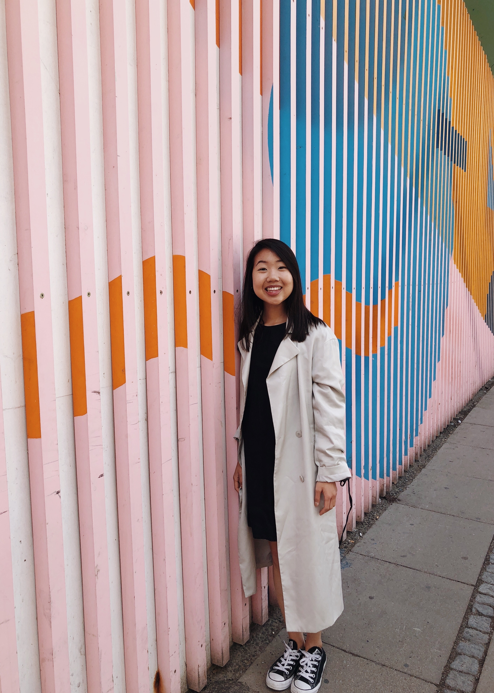

ABOUT ME

Hi, I’m Mady Kwon.
I’m currently a student at the University of Michigan in Ann Arbor, MI studying User Experience Design and Entrepreneurship. I love anything related to food, fashion, photography, and travel. Last summer, I studied abroad in Copenhagen, Denmark for three weeks at DIS Copenhagen where I took a class on New Media and Changing Communities. It was one of the best experiences I've had throughout my college years so far.
This is the travel diary of my experience -- I hope you enjoy Copenhagen through my eyes.